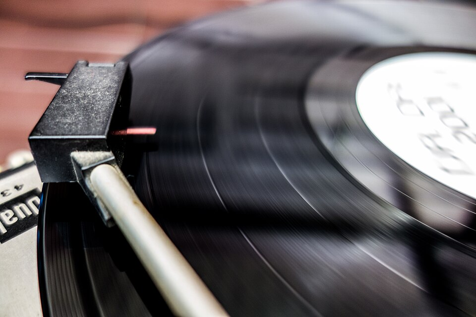

I migliori album
Ecco gli album di Lazza, dal primo al più recente.
| Anno | Album | Perché è importante |
|---|---|---|
| 2017 | Zzala | Il primo album: unisce la trap al pianoforte |
| 2019 | Re Mida | Arriva primo nella classifica italiana degli album |
| 2022 | Sirio | Il mio preferito! Album più venduto in Italia nel 2022 |
| 2024 | Locura | Disco di platino in una sola settimana |

Sirio, il disco dei record
Sirio è uscito l'8 aprile 2022 e ha 17 canzoni. Dentro ci sono collaborazioni con Sfera Ebbasta, Geolier e anche rapper americani come French Montana. È stato il primo disco rap italiano a diventare disco di diamante. La canzone Piove, con Sfera Ebbasta, è arrivata prima nella classifica dei singoli.
Dopo Sirio
Nel 2023 Lazza ha portato la canzone Cenere al Festival di Sanremo, al Teatro Ariston. Nel 2024 è uscito Locura, con ospiti come Marracash, Ghali e perfino Laura Pausini nella canzone Zeri in più.

Premi il bottone
Premi il bottone per saperlo...